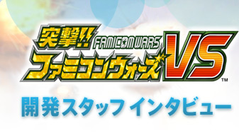
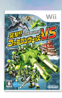

今回、海上ユニットが加えられたことも大きな変化です。前作で海上ユニットがなかったのは残念だという声があったんですね。陸・海・空とあったほうがバランスが良いですし、Ｗｉｉ版を制作する際に海上ユニットを入れてほしいという要望は、任天堂からもかなり強く出しました。


ユニットごとに特性も違います。「超ド級戦艦」「戦艦」は陸への攻撃に適しています。「潜水艦」は水中から戦艦を攻撃できます。「フリゲート艦」は潜水艦やヘリに有効です。海を加えたことによって、ユニットごとの相性によりバリエーションを持たせられました。

潜水艦は潜っている間は敵から隠れることができるので、さらにそっと近づいて攻撃するなど、戦略に新しい要素がプラスされたのではないでしょうか。

海上ユニットで苦心したのは、操作感です。あんまりオモチャっぽくすると手ごたえがないですし、かといって、本物の船とまったく同じにすると操作しにくいですよね。最終的にはオモチャと本物の船の中間くらいの感覚を、うまくデザインできたと思います。

うまく作ってくれたと思ったのは、海上ユニットの大きさですね。実際のスケールで再現したら、歩兵ユニットや車両ユニットに比べて戦艦などは山のような大きさになるわけですが、世界観に溶け込むようにうまく調整してくれたと思っています。

ストーリーモードでは、それぞれの国の視点からプレイできるようになっていますね。これも非常にユニークです。
前作ではおまけとして自軍以外のユニットをプレイできるミッションもあったのですが、今回はストーリーモードの流れの中で違う国の違うユニットをプレイできるようにしました。今回の新作では、象徴的なシンボルが「地球」なんですね。これは当然、Wi-Fiでのグローバルな対戦をイメージしたものですが、シングルプレイヤーにおいても、いろいろな国のユニットを体験してもらうことで、多様性を感じてほしかったのです。